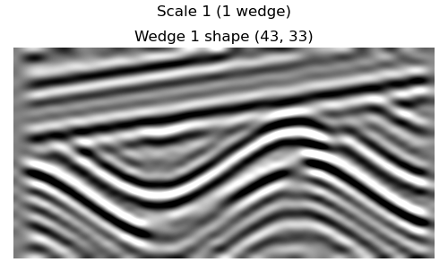
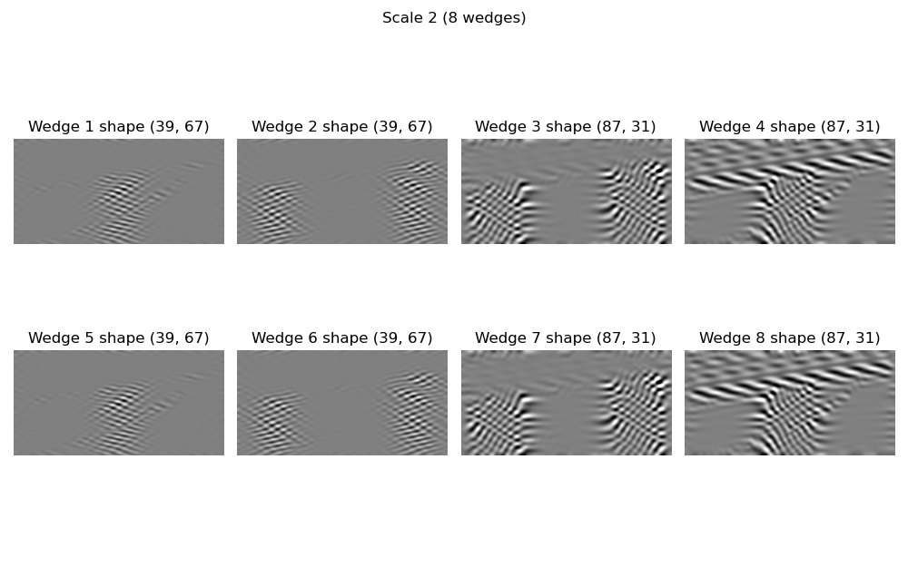
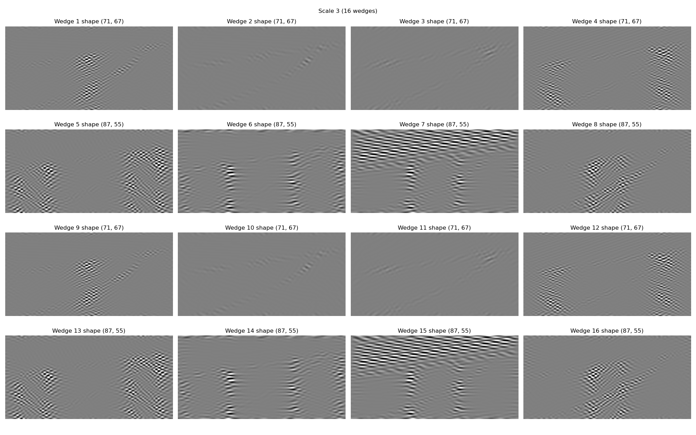
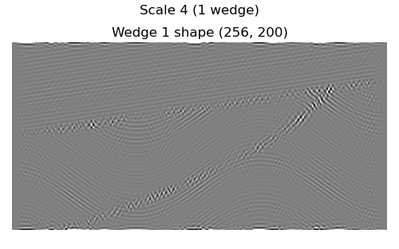
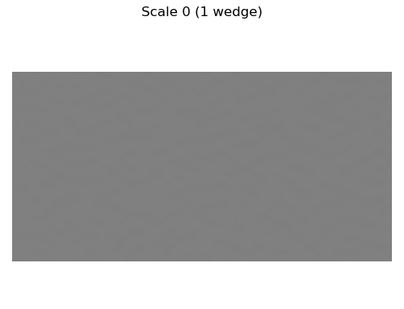
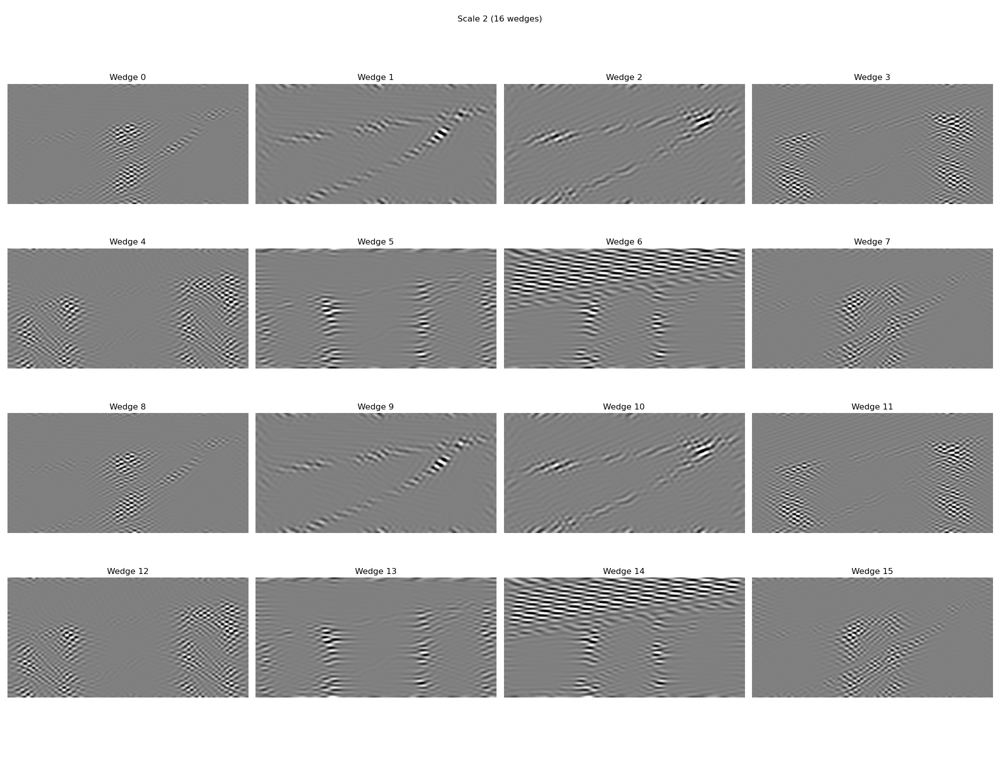
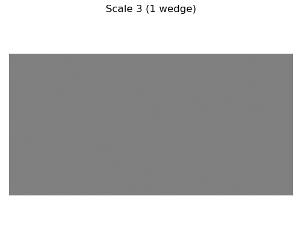

Note
Go to the end to download the full example code.
3. Visualizing Curvelet Coefficients#
This example shows the how to visualize curvelet coefficients of an image, using as example a typical subsurface structure.
# sphinx_gallery_thumbnail_number = 3
import matplotlib.pyplot as plt
import numpy as np
from curvelops import FDCT2D, apply_along_wedges, curveshow
Input data#
aspect = dt / dx
opts_plot = dict(
extent=(x[0], x[-1], t[-1], t[0]),
cmap="gray",
interpolation="lanczos",
aspect=aspect,
)
vmax = 0.5 * np.max(np.abs(d))
figsize_aspect = aspect * nt / nx
fig, ax = plt.subplots(figsize=(8, figsize_aspect * 8), sharey=True, sharex=True)
ax.imshow(d.T, vmin=-vmax, vmax=vmax, **opts_plot)
ax.set(xlabel="Position [m]", ylabel="Time [s]", title=f"Data shape {d.shape}")
fig.tight_layout()
Create Curvelet Transform#
nbscales = 4
nbangles_coarse = 8
allcurvelets = False # Last scale will be a wavelet transform
Convert to a list of lists of ndarrays.
d_fdct_struct = Cop.struct(Cop @ d)
Real part of FDCT coefficients#
Curvelet coefficients are essentially directionally-filtered, shrunk versions of the original signal. Note that the “shrinking” does not preserve aspect ratio.
for j, c_scale in enumerate(d_fdct_struct, start=1):
nangles = len(c_scale)
rows = int(np.floor(np.sqrt(nangles)))
cols = int(np.ceil(nangles / rows))
fig, axes = plt.subplots(
rows,
cols,
figsize=(5 * rows, figsize_aspect * 5 * rows),
)
fig.suptitle(f"Scale {j} ({len(c_scale)} wedge{'s' if len(c_scale) > 1 else ''})")
axes = np.atleast_1d(axes).ravel()
vmax = 0.5 * max(np.abs(Cweg).max() for Cweg in c_scale)
for iw, (fdct_wedge, ax) in enumerate(zip(c_scale, axes), start=1):
# Note that wedges are transposed in comparison to the input vector.
# This is due to the underlying implementation of the transform. In
# order to plot in the same manner as the data, we must first
# transpose the wedge. We will using the transpose of the wedge for
# visualization.
c = fdct_wedge.real.T
ax.imshow(c.T, vmin=-vmax, vmax=vmax, **opts_plot)
ax.set(title=f"Wedge {iw} shape {c.shape}")
ax.axis("off")
fig.tight_layout()
- 
- 
- 
- 
Imaginagy part of FDCT coefficients#
Curvelops includes much of the above logic wrapped in the following
curvelops.plot.cuveshow. Since we
# Normalize each coefficient by max abs
y_norm = apply_along_wedges(d_fdct_struct, lambda w, *_: w / np.abs(w).max())
- 

- 
- 
Total running time of the script: (0 minutes 12.052 seconds)